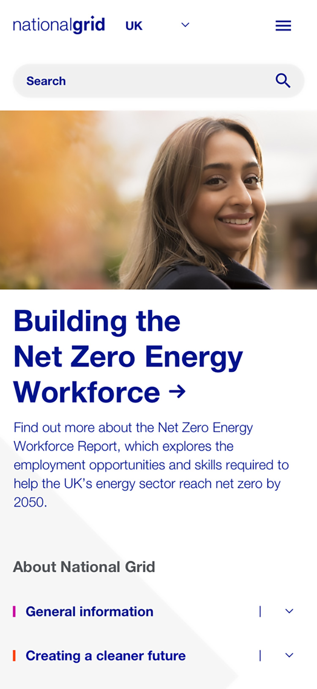
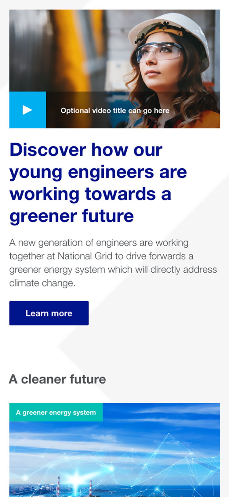
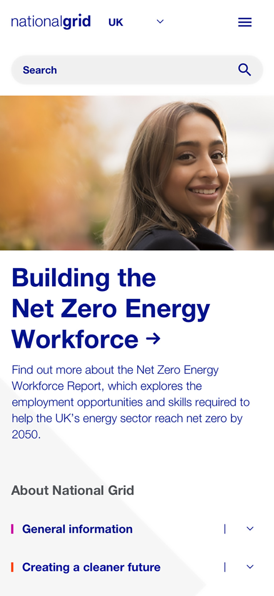
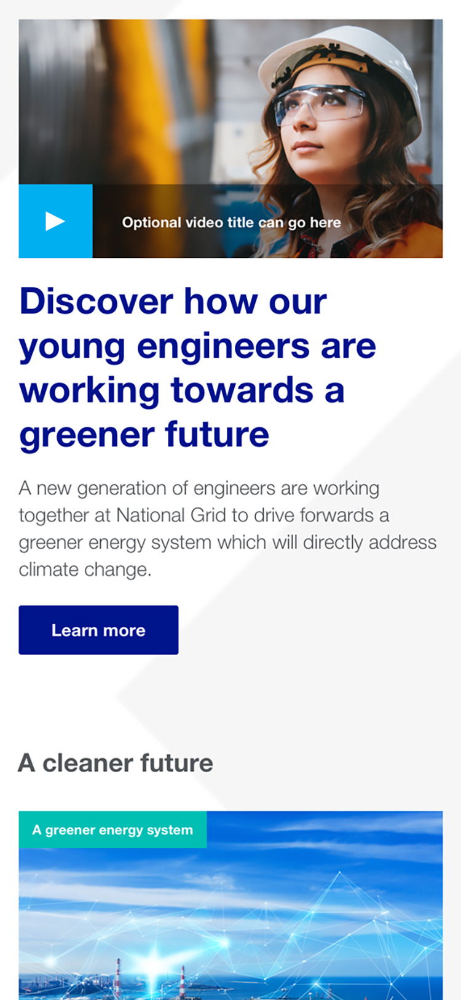
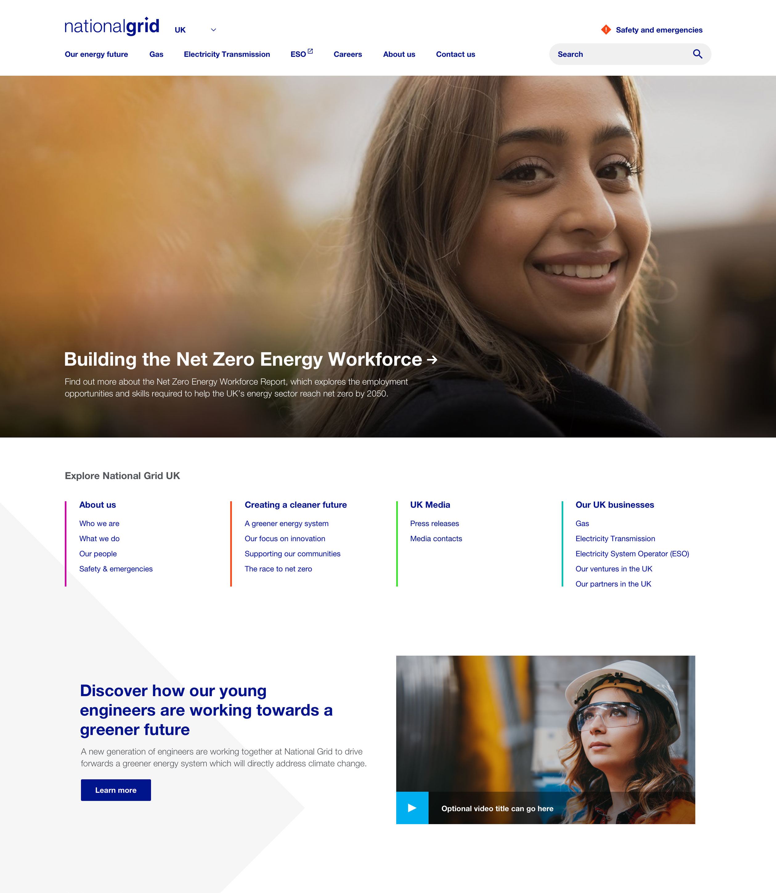
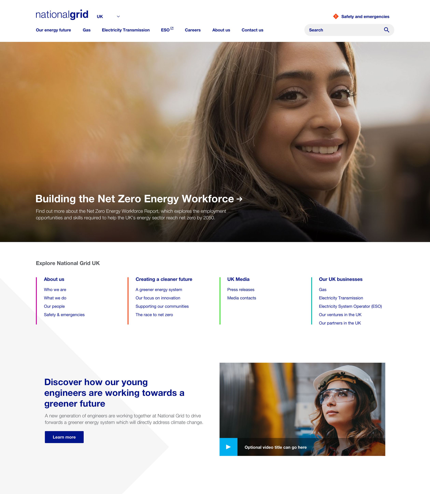

National Grid Refresh
Home page mobile view
 



2020
Lead UI Designer
Cohaesus
Over the years learning javascript, I’ve played around with a few experiments online using various weather api’s. LIke any designer that uses Slack, I couldn’t help but be wowed by the infinite amount of gifs on GIPHY, there to be used for quick replies to work colleagues. Soon my love for Giphy extended when I discovered they have an api to collect random gifs based on a search term. So with that in mind, I developed a quick idea for the browser to be a very retro weather tv screen, showing a few details about the local weather, displaying a full screen gif as a background to match the current weather, along with a few css tricks like interlacing the screen.
With the build working identically on mobile, Weathered Gifs could be used as an alternate weather update to what is usually on iOS and Android. Applications and skills used during the project: HTML, CSS, JSON, Javascript, GIPHY api, and Weather Underground api. UPDATE - Sadly the weather api I originally used seems to have stop working, so random values are added to demo how it previously worked.
Home page desktop view
 



Global style examples


Simon Kinslow.
Menu.
Back.